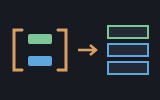

A reckoner seed: querying a list — machines/seeds/seedsinq.shoddy

seedsinq puts sinq at the prompt:
SORTBY SORTBYDESC GROUPBY MINBY MAXBY FINDFIRST TAKEWHILE
SKIPWHILE take a LIST and a PROGRAM;
DISTINCT UNION INTERSECT EXCEPT CHUNK take lists alone.
{ 3 1 2 } [ ] SORTBY x: { 1 2 3 }
{ 1 2 3 4 } [ 2 MOD ] SORTBY x: { 2 4 1 3 }
{ 1 2 3 4 } [ 2 MOD ] GROUPBY x: { ( 1 { 1 3 } ) ( 0 { 2 4 } ) }
{ 1 2 3 4 5 } 2 CHUNK x: { { 1 2 } { 3 4 } { 5 } }Eight of these thirteen words take a program as an argument, and that is the whole point of the seed. A word that orders by a key is useless without a way to say what the key is, and at a prompt the only way to say it is to type a program.
That is possible because reckoner opens
RckPureOver to a seed for exactly this reason: a word whose argument
is a [ … ] program has to be able to run it, and running one
needs the dictionary, the registers and the modes it was typed against.
CALL in seedbuiltin is the model
this seed follows; seedeng's ENGDERIV
and friends are the same shape.
Two rules come with it. The program sees the caller's whole
session — it may name a word defined a line earlier and may
RCL a register — and whatever it changes is
discarded, because it runs in a sub-evaluation whose state does
not thread home.
: TENS 10 * ;
{ 3 1 2 } [ TENS ] SORTBY x: { 1 2 3 }[ ] leaves the element exactly as it found it, so
SORTBY with an empty program orders a list by its own values —
which is what SORTL in seedseq does, and
the two agree.
Numbers and strings are what the < underneath
Compare accepts. A flag is admitted as well, and
has to be: the predicate words are typed as comparisons, and a comparison
answers True or False, not 1 or 0. Refusing a flag
would have made TAKEWHILE, SKIPWHILE and
FINDFIRST unusable with the very programs they exist for.
False sorts before True.
Anything else — a list as a key, say — is refused by name rather
than mis-sorted, on SORTL's precedent.
Every selector word runs the program over the whole list first and refuses on the first failure, in seedeng's pre-flight pattern. A key program that failed halfway would otherwise leave a half-ordered answer that looked fine. It also means the program runs once per element rather than once per comparison, which for a sort is the difference between n and n log n evaluations of whatever was typed.
GROUPBY answers a list of PAIR cells — key, then
member list — which is precisely the shape
seeddict's words read, so
DGET works on the answer without learning anything new.
| Word | Description |
|---|---|
| SORTBY ( list prog -- list ) | The list ordered by what the program answers for each element. Equal keys keep the order they were in, so ordering twice orders by both. |
| SORTBYDESC ( list prog -- list ) | The same, largest first. Equal keys still keep the order they were in. |
| GROUPBY ( list prog -- list ) | The list gathered into groups by what the program answers, each group a PAIR of the key and its members. Groups come out in the order their keys were first seen, members in the order they were in. |
| MINBY ( list prog -- x ) | The element whose key is smallest. A tie answers the earliest one. Refuses an empty list rather than inventing an answer. |
| MAXBY ( list prog -- x ) | The element whose key is largest, ties to the earliest. |
| FINDFIRST ( list prog -- x ) | The first element the program answers nonzero for. Refuses when nothing matches, so a miss cannot be mistaken for a value. |
| TAKEWHILE ( list prog -- list ) | The run at the front the program answers nonzero for, stopping at the first it does not. |
| SKIPWHILE ( list prog -- list ) | Everything from the first element the program answers zero for onwards. |
| DISTINCT ( list -- list ) | The list with later repeats dropped, keeping the first sighting of each value in place. |
| UNION ( list list -- list ) | Everything in either, each value once, the first list's order first. |
| INTERSECT ( list list -- list ) | Only what is in both, in the first list's order. |
| EXCEPT ( list list -- list ) | What is in the first and not the second, in the first list's order. |
| CHUNK ( list n -- list ) | The list cut into batches of n, the last one short if it has to be. Refuses a size below one, which would never finish. |
Nothing typed here can end the session. That is not a
courtesy — it is the seed's job, and two words needed real work to keep it.
sinq's Chunk aborts on a batch size below one and its
MinBy aborts on an empty list, so CHUNK,
MINBY and MAXBY each catch that case before it can
reach the machine and refuse with a reason instead.
The set words compare cells structurally, which means they work on numbers, strings and pairs and cannot speak about a list of lists: two separately built lists of the same items are never equal in Shoddy. Order by a number or a string key when that comes up.
There is no join here. JoinOn and
GroupJoinOn take three programs between them — two key selectors
and a combiner — and a stack word taking three programs is harder to type
correctly than the GROUPBY it would be built from. They stay
available to a mill that includes sinq directly.
| User | How | |
|---|---|---|
| halifax | Folded last, so it is the last heading WORDS prints. | |
| sparky | Sparky folds it too, so a model calling eval reaches the same words halifax puts at a prompt. |
A mill claims this seed by folding RckSeedSinq over its reckoner
state, which is all halifax does.
| Machine | Why | |
|---|---|---|
| cuttle | The Cell type — CutList, CutPair, CutProg and the rest — every word here reads and answers. | |
| reckoner | RckReg, RckSeeding, the argument readers, and RckPureOver with RckProgArg/RckProgOn — which is what makes a program argument possible at all. | |
| sinq | Every word here is one of sinq's, wrapped in guards. The ordering, grouping and set logic is all the machine's. | |
| seq | Pair, Fold, Reverse and First for the decorated elements the selector words carry. |